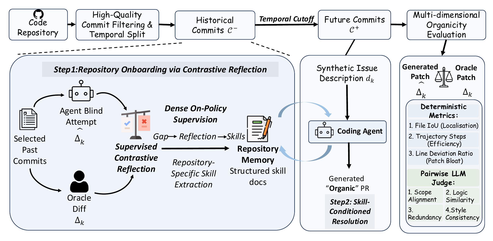
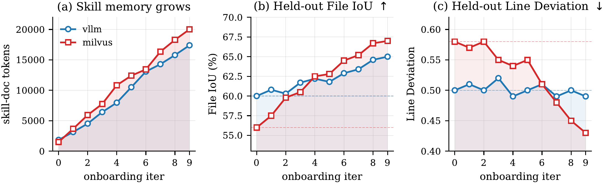

Learning to Commit
Next-Commit Prediction via
Online Supervised Contrastive Reflection
1 Tsinghua University2 Shanghai AI Laboratory
† Corresponding author
A codebase tells you what exists.
Its history teaches you how to contribute.
The idea
Correct code is
only the beginning.
Passing tests does not guarantee that a patch fits a project. Coding agents can miss local conventions, reimplement existing utilities, or overlook architectural boundaries.
We call this fit organicity: how closely a generated patch resembles one written by a long-term maintainer. Learning to Commit uses a repository’s own history to teach agents the development patterns that a snapshot alone cannot reveal.
The method
Experience becomes a skill.
Each historical commit is a learning opportunity.
The agent tries first. The expert patch comes second.
Historical task · Before seeing the answer
Let the agent try for itself.
Given the repository snapshot, an issue-style task, and its current skill document, the agent explores the codebase and produces a candidate patch. The accepted human patch remains hidden.

The benchmark
Learn earlier. Evaluate later.
Every learning commit predates every test commit
within the same repository.
100 curated commits in total, selected from 63,417 non-merge commits spanning 2.6–7.1 years of project history.
What makes a patch fit?
- File localisation
- Touch the files a maintainer would touch.
- Solution patterns
- Reuse the project’s utilities and abstractions.
- Change economy
- Avoid redundant code and unnecessary changes.
- Code conventions
- Follow local naming, style, and test organisation.
The results
Better fit. More passing tests.
Gains across three agent models,
with the agent loop held fixed.
Test pass rate on 50 sampled tasks
Reflection needs an anchor.
On the Learning to Commit benchmark, unsupervised self-reflection reaches a 44% pairwise win rate against the no-memory baseline. Comparing the agent’s own attempt with the expert patch raises this to 59%. Both results use Claude Opus 4.6.
Learning over time
History adds up.
As the skill document evolves, file localisation improves on both vllm and milvus. Patch-size deviation falls on milvus while remaining largely stable on vllm.
The gains are not uniform: accumulated experience helps most where a repository’s conventions leave room for improvement.

What the results do—and don’t—show.
The strongest improvements are in reproducing core logic and reducing redundancy. Scope alignment and code style show smaller or neutral effects.
Skills can also steer an agent too confidently toward a familiar pattern. Some tasks regress, and helped tasks can require more tool calls. File overlap and patch size are diagnostic measures, not substitutes for correctness or real-world merge decisions.
Reference
Cite this work.
Learning to Commit: Next-Commit Prediction via Online Supervised Contrastive Reflection
@misc{li2026learningcommitgeneratingorganic,
title = {Learning to Commit: Next-Commit Prediction
via Online Supervised Contrastive Reflection},
author = {Mo Li and Qitai Tan and Kai Chen
and Ting Cao and Yunxin Liu},
year = {2026},
eprint = {2603.26664},
archivePrefix = {arXiv},
primaryClass = {cs.SE},
url = {https://arxiv.org/abs/2603.26664},
}